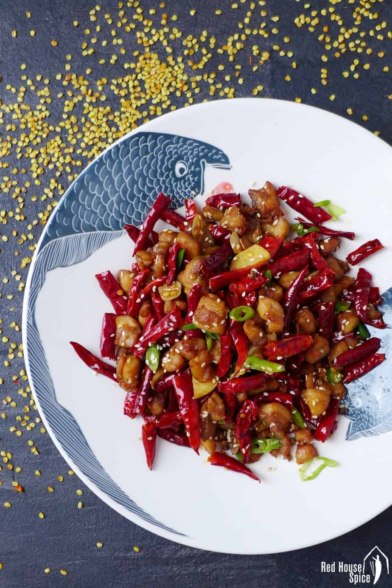

La Zi Ji

Description
Chongqing Chicken (or chongqing la zi ji –重庆辣子鸡) is a dish that has everything going for it. It’s legendary. It’s dramatic. It’s mouthwatering (to me, anyway). And despite its deadly spicy look, it’s actually really good.
For those of you who don’t know, Chongqing is located in the Sichuan province of China and has over 30 million people living there. Imagine how much Chongqing chicken and other spicy hot food is being consumed there!
Ingredients
- 400g chicken thigh
- 14 slices ginger
- 1 stalk spring onion
- 2 tsp soy sauce
- 1/4 tsp salt
- 500ml cooking oil
- 30g dried chillies
- 1 tsp Sichuan peppercorn
- 4 garlic cloves
- 1 pinch sugar
- 2 tsp cooking wine
Instructions
- Cut the chicken into bitesize cubes. Mix with all Group 1 ingredients. Marinate for 20 minutes (or longer if you wish). Remove ginger and spring onion before deep frying.
- While waiting, prepare the dried chilli. Break each one into half then remove the seeds.
- Heat up oil over a high heat. When the temperature reaches 160°C / 320°F, gently slide in chicken pieces. Fry for 3 minutes or so (when the edges of the chicken lightly brown).
- Remove the chicken from the oil. Continue heating up the oil. Put the chicken back in when the oil reaches 180°C / 356°F. Fry for 1 minute then take out.
- Leave about 1 tablespoon of oil in the wok. Fry ginger, garlic and Sichuan pepper over a medium low heat for 1 minute. Add dried chillies. Retain the heat level and fry until fragrant (do not burn).
- Stir in chicken pieces. Add soy sauce, sugar and rice wine. Cook a further 2 minutes. Sprinkle sesame seeds and spring onion. Give everything a quick stir then dish out.